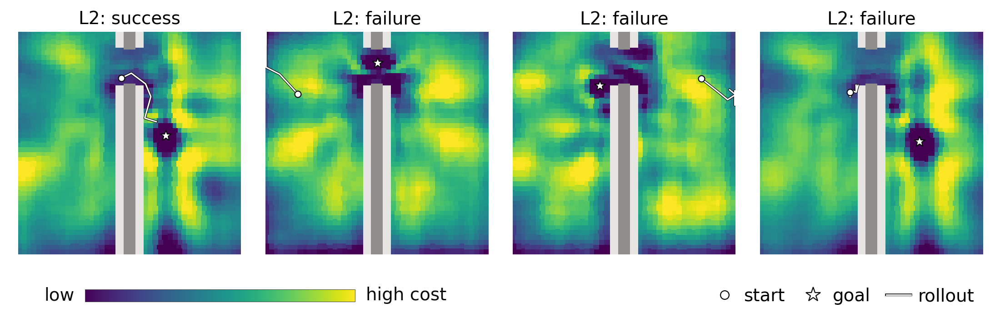
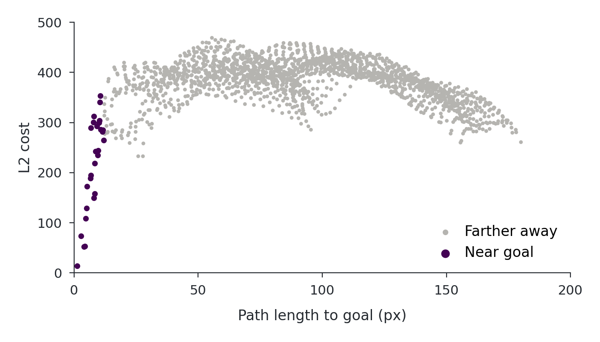
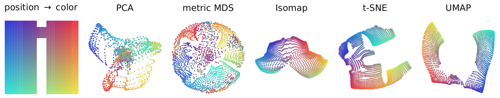
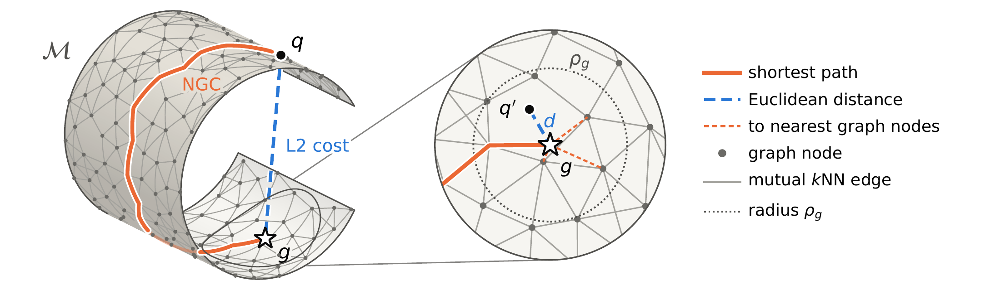
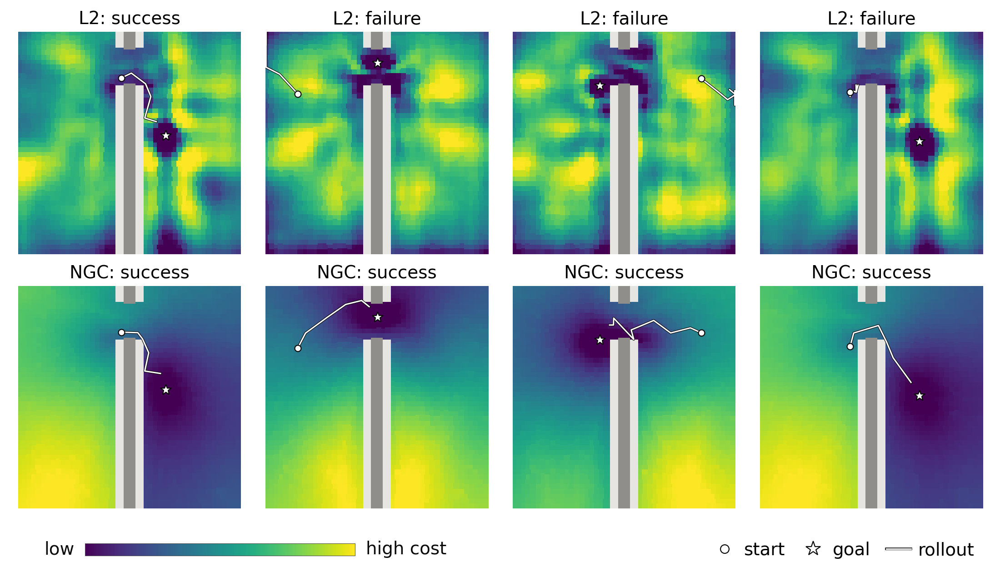
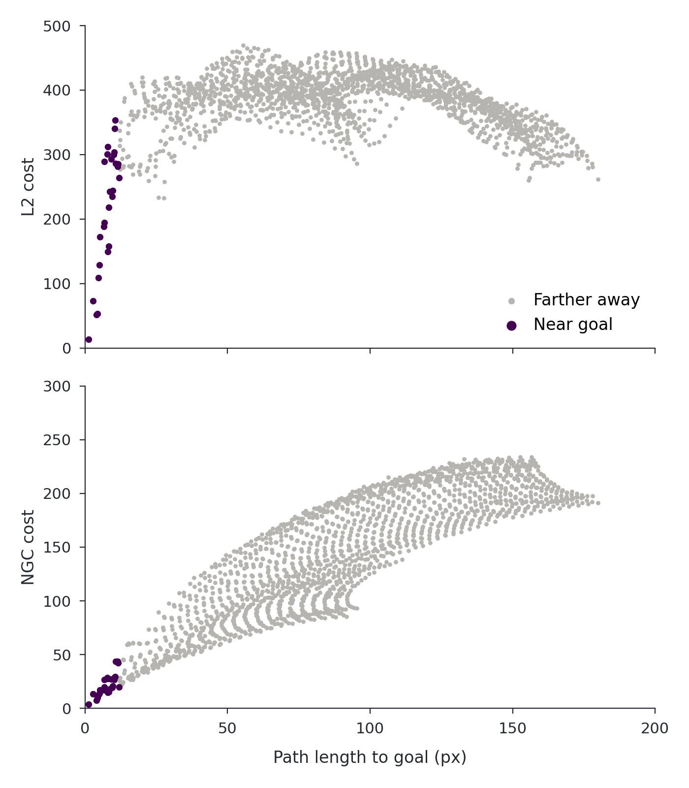
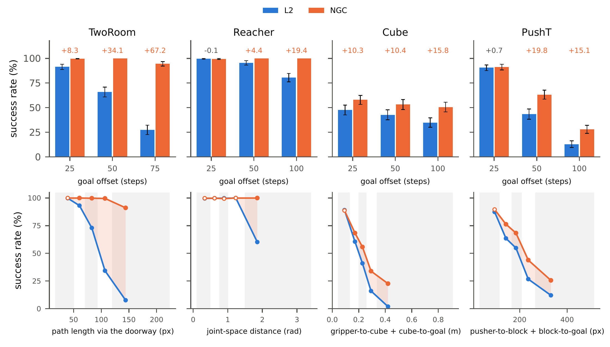
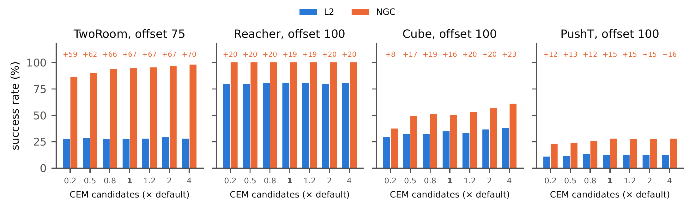

Latent World Models Should Plan with
Distances Along the Latent Manifold
Euclidean distance in latent space can mislead planning. Our results on LeWM support planning with distances along the latent manifold.
Abstract
Latent world models such as LeWM plan by searching for an action sequence whose predicted terminal latent is closest to the goal latent under an ambient norm, such as the Euclidean distance. Planning with such a cost assumes that proximity in the ambient latent space reflects proximity to the goal in the environment. Studying LeWM, we find that this assumption holds only in a small neighborhood around the goal, whereas farther away the L2 cost forms spurious low-cost basins that trap the planner. Yet neighborhood-based embeddings show that the latents retain the underlying physical state. We therefore hypothesize that the latents lie near a curved, low-dimensional manifold, and that the terminal cost should measure the distance along this latent manifold rather than through the ambient space. To estimate this manifold distance, we propose the Neighborhood Graph Cost (NGC), which computes shortest-path distances on a mutual nearest-neighbor graph constructed over training latents. NGC changes only the terminal cost and requires no retraining. This single change improves the planning success rate of LeWM across all four benchmark tasks and nearly solves TwoRoom and Reacher: even at the farthest goal offsets tested, NGC reaches 95% and 100% success, whereas the L2 cost falls to 27% and 81%. These results support the manifold hypothesis and our argument that latent world models should plan with distances along the latent manifold.
Observation
Even in TwoRoom, where an agent only needs to move between two rooms through a doorway, LeWM can fail to reach the goal. The rollouts below show the agent becoming trapped far from its target at locations that correspond to spurious low-cost basins in the L2 cost visualization.

Near the goal, L2 cost is faithfully low. Farther away, it no longer reflects physical distance to the goal: a state can have a low latent cost despite being physically far from the goal. The plot below shows this for the second example.

Dimensionality reduction methods based on global latent distances fold the room layout, while those based on local neighborhoods recover its structure. This suggests that the latents retain spatial information that global L2 distance fails to capture.

Hypothesis
We hypothesize that the latents lie near a curved, low-dimensional manifold. Nearby latent distances can preserve local physical relationships, while a straight line through the ambient space can shortcut the manifold and make physically distant states appear close.
This suggests latent world models should plan with distances along the latent manifold.
Method
Neighborhood Graph Cost (NGC) combines graph shortest paths with local Euclidean distance to estimate distance along the latent manifold.

Offline, we encode 5,000 training observations as nodes , connect mutual 15-nearest neighbors with Euclidean-weighted edges, and precompute shortest-path distances .
For a predicted terminal latent and goal , we find the shortest route through their four nearest graph nodes, and :
Locally, NGC uses direct distance . The radii and are the distances to each latent’s 15th-nearest graph node:
CEM scores candidate action sequences with this terminal cost. The encoder, predictor, and planner stay unchanged, with no retraining.
Results
Returning to the same four TwoRoom examples, NGC produces cost maps that better reflect the route to the goal. With the encoder, predictor, and planner fixed, all four NGC rollouts reach their goals.

Terminal cost vs. path length
In the second example, NGC’s cost better reflects the path length to the goal.

Across all four tasks, NGC improves success at longer goal offsets (top). Grouping the same pairs by physical start–goal distance (bottom) shows that the largest gains occur on distant goals, where L2 performance degrades most.

Success rates by goal offset
| Task | Offset | L2 (%) | NGC (%) | Δ (pp) |
|---|---|---|---|---|
| TwoRoom | 75 | 27.3 | 94.6 | +67.2 |
| Reacher | 100 | 80.6 | 100.0 | +19.4 |
| Cube | 100 | 34.8 | 50.6 | +15.8 |
| PushT | 100 | 12.8 | 27.9 | +15.1 |
Oracle predictor
With an oracle predictor, NGC reaches 100% on TwoRoom, compared with 94.6% in the main evaluation. Its advantage over L2 persists with exact predictions, showing that prediction error alone cannot explain the gains. Cube and PushT also improve.
| Task | Offset | Predictor | L2 (%) | NGC (%) | Δ (pp) |
|---|---|---|---|---|---|
| TwoRoom | 75 | Learned | 24 | 94 | +70 |
| Oracle | 19 | 100 | +81 | ||
| Cube | 100 | Learned | 31 | 50 | +19 |
| Oracle | 38 | 74 | +36 | ||
| PushT | 100 | Learned | 14 | 28 | +14 |
| Oracle | 13 | 36 | +23 |
CEM search-budget comparison
At the longest goal offsets, increasing the CEM candidate pool yields only small gains for L2. Even with four times the default budget, L2 remains below default-budget NGC on every task, suggesting that more search alone cannot compensate for the limitations of the L2 cost.

Rollouts
Three examples each for Reacher, Cube, and PushT where NGC succeeds and L2 fails.
Citation
@article{you2026ngc,
title={Latent World Models Should Plan with Distances Along the Latent Manifold},
author={You, Zunzhi and Tao, Linwei and Xu, Siyu and Wang, Yunke and Xu, Chang},
journal={arXiv preprint arXiv:2610.25013},
year={2026}
}